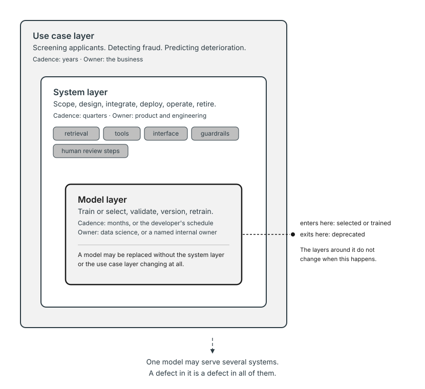
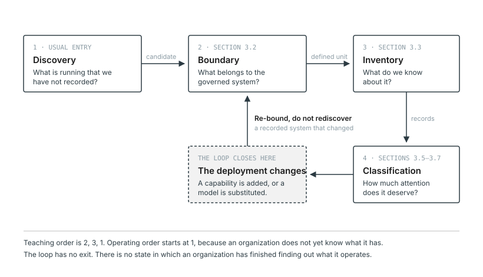
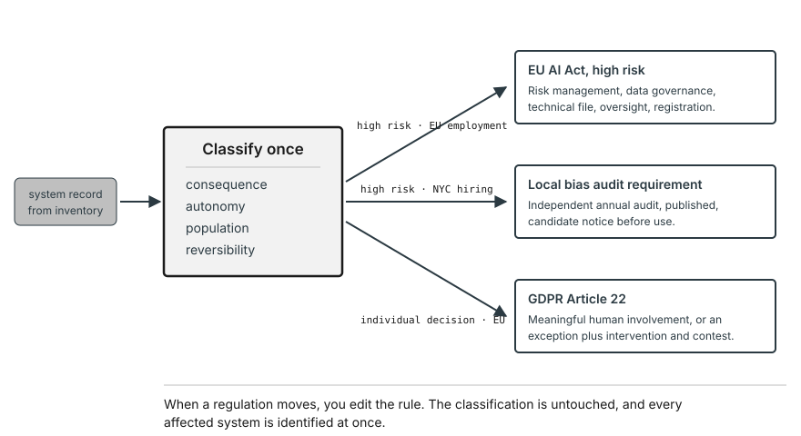

3. Scoping, Inventory, and Risk Classification
An auditor arrives and asks one question. What artificial intelligence does your organization operate?
Very few organizations can answer. This is not usually carelessness. It is that nobody agreed what counted, nobody kept a list, and the technology arrived through several doors at once. Some of it was built by a data science team and is well documented. Some of it came bundled inside software the organization bought for other reasons. Some of it is a spreadsheet with a model in it that an analyst built in an afternoon. Some of it is an employee pasting customer records into a chatbot on a personal account.
Every obligation described in Chapter 2 assumes an answer to the auditor’s question. The EU AI Act allocates duties by risk tier, which presupposes that someone has classified the systems. State algorithmic discrimination laws require impact assessments for consequential decisions, which presupposes that someone has identified which systems make them. Internal policy cannot be applied to systems nobody has listed. An organization that cannot answer the auditor is not merely embarrassed. It is unable to comply with anything, because compliance operates on a population it has not defined.
This chapter is about producing that answer and keeping it true. Three things are required, and they must happen in order. You need a way of talking about what you are governing that does not collapse different things into one. You need a record of what exists. And you need a way of sorting that record so that governance effort lands where it matters instead of being spread evenly across everything.
What you will be able to do
- Distinguish the model, system, and use case layers, and say which one a given governance question belongs to
- Decide where the governance boundary falls around an AI component embedded in a larger system
- Specify the fields an inventory record must contain, and explain what fails without each one
- Design a discovery approach for AI the organization does not know it has
- Classify a system against a risk scheme and defend the classification
- Test one system record against each regulation’s own trigger, keeping the internal tier separate from legal status
3.1 Three nested lifecycles
Most writing on this subject refers to the AI lifecycle, as though there were one. There are three, they run at different speeds, and they belong to different people. Conflating them produces governance that watches the wrong thing.
The model layer is the narrowest. A model is trained or selected, validated, versioned, retrained, and eventually deprecated. Its lifecycle typically runs in months for an internally trained model, and for a model accessed through an interface the organization does not control the timeline at all, since the developer decides when a version is retired. What follows for ownership is a proposed record model, not a fact about how organizations are structured. Assign this layer to data scientists where the organization built the model, and where it did not, name an internal owner responsible for tracking the dependency instead of leaving the layer unowned. A model layer with no internal owner is itself a governance gap worth recording as one, not a default state to accept.
The system layer encloses the model. A system is scoped, designed, integrated, deployed, operated, and retired. It contains one or more models together with the things that surround them, retrieval components, tools the system can call, the interface a user sees, the guardrails that constrain output, and the human review steps built into the workflow. Its lifecycle typically runs in quarters or years. The proposed ownership model assigns it to product and engineering, an assignment to adapt to wherever these responsibilities sit in a given organization, not to adopt unchanged.
The use case layer encloses the system. A use case is a business purpose that some system serves. Screening job applicants is a use case. Detecting fraudulent transactions is a use case. A use case may be served by one system, then by a different one when the first is replaced, then by a third. It typically outlives both. The proposed ownership model assigns it to the business function it serves, which needs a named accountable owner for the same reason the other two layers do.
These layers move independently, which is the whole reason for separating them. One model can serve several systems, so a defect discovered in the model affects all of them at once. One system can swap the model underneath it without changing anything the user sees, which means a system that passed validation in March may be running different weights in September. A use case persists while both change beneath it, which means the question of whether the organization should be doing this at all is a question nobody revisits unless someone makes them.
Governance that operates only at the system layer will miss a model defect propagating across systems. Governance that operates only at the model layer cannot say what any of it is for. This book governs the system layer in Part II, addresses the model layer specifically in Chapter 6, and addresses the use case layer in Chapter 4.

Read Figure 4.1 from the inside out. The model sits innermost because it is the component with the least context and the least autonomy. It produces an output and knows nothing about what happens next. Each enclosure adds something the layer inside it lacks. The system adds tools, interfaces, and human steps. The use case adds purpose and consequence. Notice that the entry and exit arrows sit on the model layer, not on the outer layers, because models are the part that gets swapped. A model enters when it is selected or trained and exits when it is deprecated, and neither event necessarily disturbs the system or the use case around it. That is exactly what makes it dangerous.
In a small organization the three layers may be owned by the same two people, and the distinction can feel like bureaucracy. It is not. The layers still move independently even when nobody has separated them, and the small organization discovers the model swap later than the large one does.
3.2 Where the governance boundary falls
Chapter 1 defined AI governance as how an organization decides what its AI systems may do, establishes that they do it, and makes clear who answers when they do not. Every one of those three depends on knowing which systems are in question, which is what this chapter supplies. It also gave a test for whether something is artificial intelligence, turning on whether the system infers how to produce an output rather than following rules someone specified. That test is necessary and it does not settle the question you will face.
The question you will face is that a largely conventional system has an AI component somewhere inside it, and you need to know how much of the system is in scope. This is a boundary decision, not a binary classification, and treating it as binary produces two failure modes. Scope only the component and you govern a model while ignoring the process that decides what happens to its output. Scope the whole system and your inventory fills with software that has no AI governance issue, which exhausts the function’s credibility long before it exhausts its budget.
Draw the boundary around whatever can materially affect the system’s purpose, authority, data, behaviour, exposure, evidence, ability to be intervened upon, or the remedy available afterward, not only around what technically shapes the AI component’s inputs or is shaped by its outputs. The AI component is in scope intensively. A dependency is not excluded from scope merely because it does not transform the component’s input or output.
The rule follows from the socio-technical account in Chapter 1. If a system’s behaviour is produced jointly by the model and by the people and processes around it, then a boundary drawn around the model alone cannot capture what produces the behaviour. The rule works because it tracks causation broadly, not one narrow technical relationship. A retrieval step that determines what the model sees is shaping its inputs, so it is in. A dashboard that displays the model’s output to someone who acts on it is shaped by its outputs, so it is in. The authentication service both of them run on touches neither input nor output directly. But if a failure or compromise in it could let the wrong person reach the system, change what it does, or erase the trail a reviewer would need afterward, it can still create governable risk. It belongs in scope at whatever depth that risk warrants. Something is safely excluded only once it cannot materially affect purpose, authority, data, behaviour, exposure, evidence, intervention, or remedy, not merely because it sits outside the input-output path.
The decision needs its own record, because a boundary that was never written down cannot be defended when it is questioned or revisited when the deployment changes. Template 10, the Scope Decision Record, has fields for the grounds applied to each dependency, for what was excluded and why, and for the changes that would require the boundary to be drawn again.
The boundary test produces the unit the inventory has to record. It does not make every dependency inside the boundary a separate AI system. It determines what one system record must describe, which model records it must link to, and which human and technical dependencies have to stay visible in it. Calloway’s record above is one system with five dependencies named in it, not six records. The inventory in section 3.3 is where that decision becomes durable, and a boundary that never reaches a record is a conversation, not a control.
Two consequences follow that are worth stating before the disputes. The boundary is a property of the deployment, not of the software, so the same product can be in scope at one organization and out at another depending on what surrounds it. And the boundary can move without anyone changing the code, because adding a step that acts on the output brings that step inside.
Before the disputes, one boundary worked through in full, because the eight grounds are easier to state than to apply.
Calloway licensed a resume screening product. Section 3.4 describes what an inventory later found inside it, but take the deployment as it ran at the point someone should have drawn the boundary. A vendor-hosted model scores applicants. A vendor-hosted scheduling component sends messages to candidates. Calloway’s applicant tracking system holds the candidate records both of them read. Recruiters see ranked lists in a vendor web interface and decide who to advance. Single sign-on authenticates everyone who touches any of it. The vendor’s billing portal records what Calloway is charged. An internal reporting warehouse copies hiring outcomes nightly for workforce analytics.
The screening model and the scheduling component are in scope intensively, and neither is at issue. They are the AI. The work is the other five.
The applicant tracking system is in on data and on evidence. It supplies what the model scores, so a defect in it becomes a defect in every score. It is also where a reviewer would go to reconstruct what the system saw about a particular candidate, which makes it part of the evidence trail whether or not anyone has designated it that way.
The recruiter interface is in on behaviour and on intervention. It is shaped by the model’s outputs, which alone would settle it. But the stronger ground is that the interface is where human oversight either happens or fails to happen. A ranked list with no indication of confidence, or with the decline reason pre-filled, produces different reviewer behaviour than the same scores presented differently. The oversight arrangement the classification will require lives here, not in the model.
Single sign-on is the interesting one, and it is the case the definition box was written for. It touches neither the model’s inputs nor its outputs. It is in scope anyway, at limited depth, on authority, exposure, and evidence. If the wrong person can reach the scheduling component, they can send messages to candidates in Calloway’s name. If session logging is thin, the question of who changed a threshold has no answer. Calloway does not govern its identity provider as an AI system. It records the dependency, confirms that access to both components is scoped and logged, and names who would be asked if that stopped being true.
The billing portal is out. Take each ground in turn. It cannot affect what the system is for, who may operate it, what data it sees, how it behaves, who can reach it, what evidence survives, whether anyone can intervene, or what remedy a candidate has. It records a commercial fact after the governed activity has finished. The reason is what makes this an exclusion rather than an omission.
The reporting warehouse is out for the deployment and in for something else, which is the distinction most often missed. Hiring outcomes copied nightly into workforce analytics cannot flow back to change a score, so it fails every ground as a dependency of the screening system. But the copy is a second processing activity with its own population and its own purpose, and it gets its own intake rather than a line in this record. Out of scope here is not out of scope everywhere.
That reasoning is what the record holds. Template 10 filled for this deployment, before the vendor enabled scheduling, reads as follows. The fields are the template’s; only the entries are Calloway’s.
SCOPE ID |
SCP-2024-017 · TalentScreen applicant screening |
DATE |
14 March 2024 |
ACCOUNTABLE |
R. Okafor, Director of Talent Acquisition |
TRIGGER |
Procurement, pre-implementation review |
DEPLOYMENT |
Vendor-hosted model ranks applicants; recruiters review ranked lists in a vendor interface and decide who advances; candidate records held in Calloway’s own ATS. The vendor’s product description presents one system. |
AI COMPONENT |
Vendor scoring model. In scope intensively; not at issue below. |
IN SCOPE |
Applicant tracking system. Grounds: data, evidence. Supplies what the model scores, and holds what a reviewer would reconstruct. |
| Recruiter interface. Grounds: behaviour, intervention. Where oversight happens or fails to. | |
LIMITED DEPTH |
Single sign-on. Grounds: authority, exposure, evidence. Touches neither input nor output, but controls who can reach the system and whether the trail survives. Not governed as an AI system; access scoped and logged, identity team named as dependency owner. |
OUT OF SCOPE |
Vendor billing portal. Fails all eight grounds: records a commercial fact after the governed activity has finished. |
| Reporting warehouse. Fails all eight here: outcomes copied nightly, no path back to a score. Its own processing activity; separate intake WFA-2024-006. | |
DISAGREEMENT |
IT security argued single sign-on was infrastructure and fully out. Retained at limited depth on the evidence ground. |
WOULD MOVE THIS |
A step added that acts on the output without a person in between. A new population affected. A vendor model change. Contract renewal. |
PRODUCED |
SYS-2024-041, MDL-2024-019 |
NEXT REVIEW |
14 March 2025, or on any trigger above |
Two entries carry most of the weight, and neither is an inclusion. The billing portal is out with a reason, which is what separates a decision from an omission. And WOULD MOVE THIS names, in March 2024, the exact event that arrived eighteen months later.
Then the boundary moved. The vendor enabled the scheduling component during implementation, and a system that recommended began to act. Nothing in Calloway’s code changed. What changed is that a step now took an action on a candidate without a person in between, which brought the message templates, the sending authority, and the record of what was sent inside a boundary drawn eighteen months earlier around a system that only ranked. A scope record naming “a step added that acts on the output” as a trigger would have caught it at the moment the vendor asked Calloway to enable the feature. Calloway had no such record, so the boundary was redrawn by an inventory exercise four days into reconstructing what the component had done.
Apply that to the cases that generate real disputes.
A vendor product contains a model the vendor has not disclosed. The organization bought a scheduling tool and discovers that its prioritization is learned, not rule-based. This is in scope, and not having known it is itself the finding. Chapter 16 addresses what to do when a vendor will not discuss it.
An analyst has built a spreadsheet with a regression in it. The formal answer is that a fitted regression infers instead of specifying, so it qualifies. The useful answer is that scope is not the same as intensity. It goes in the inventory, it is classified, and if it informs nothing consequential it receives almost no governance. The reason to inventory it is that spreadsheets get promoted into processes.
A workflow calls a general purpose model through an interface. The organization trained nothing and the model belongs to someone else. In scope, and this is the majority case, not an edge case. What is being governed is not the model but the workflow’s use of it, what is sent, what is done with what comes back, and what the workflow does when the model returns something wrong.
An agent takes actions using tools. In scope, and the boundary extends further here than anywhere else. Every tool the agent can invoke and every system it can reach is within the blast radius of a governance failure, which means the boundary is drawn by the agent’s permissions, not by the agent’s code.
3.3 Building an inventory
An inventory is the artifact everything else depends on. It is also the artifact most organizations do not have, and the one that is hardest to build after the fact.
Two record types are needed, and they must be linked. A single record cannot serve both purposes, and organizations that try produce something that answers neither question well.
A system record describes something that does a job in the organization. A model record describes something that produces predictions or content. One model may appear in many system records, and one system record may reference several models.
The system record carries an identifier, an owner who is a named person, not a team, the purpose the system serves, the type of decision it makes or informs, and the populations affected by those decisions. It also carries the deployment context, the risk classification and the reasoning behind it, the regulations that apply, where the supporting evidence lives, and the date of the next review.
Three of those fields do more work than the others and are the ones most often filled in badly.
The owner field names a person and their role, with the effective date they took the role, not a department alone. A team cannot be asked in eighteen months why a threshold was set where it was, and a record naming a team is a record with no one to ask. A record naming only a person, with no role and no effective date, ages the same way once that person moves on, because nobody can tell when the entry went stale. When the named person leaves, reassigning ownership is a deliberate act, recorded with its own effective date. The point is that an ownerless system should be visible as ownerless, not quietly attributed to a department.
The populations affected is the field that connects the inventory to everything in Chapter 4. It is also the one that gets written as the obvious answer, which for a hiring system is candidates and stops there. The record needs the populations that will never know the system ran, because those are the ones whose absence from a consultation has to be compensated for somewhere.
The reasoning behind the classification matters more than the classification. A record saying high risk tells a later reader the conclusion. A record saying high risk because the consequence is irreversible and the affected population cannot detect the system’s involvement tells them which of those facts to re-examine when something changes. Classifications age. Reasoning is what lets you tell whether it has.
The model record carries an identifier, provenance, the developer, the version in use, a summary of training data where that is known, documented limitations, and the developer policies the organization has inherited by using it. Chapter 6 explains why that last field exists and why it is not a formality.
On the buy path, most of this record will be incomplete, and the discipline is to record the gap instead of leaving the field blank. A blank field is indistinguishable from an unasked question. A field reading “requested from vendor, refused, escalated to procurement” is evidence of diligence and a live item, and it is the difference between a governance function that knows what it does not know and one that has not looked.
The link between the two is the part that matters and the part most often skipped. It is a many-to-many relationship, which is why it cannot be collapsed into a single record. One model may sit inside four systems, and one system may call three models for different steps.
Without the link, a defect found in a model cannot be propagated to every system deploying it, which is the situation the model layer exists to prevent. The propagation runs in both directions and both are needed. From model to systems, so that a disclosed weakness reaches everyone affected by it. From system to models, so that an incident in one system can be traced to whichever component produced the behaviour, which Chapter 10 depends on entirely. When a developer discloses that a model version underperforms for a particular population, the question that follows is which of your systems are running it. An inventory that cannot answer in minutes is an inventory that will answer in weeks, after someone has gone through systems one at a time.
Each field earns its place by naming what fails without it. Without a named owner, escalation has no destination and the system is governed by whoever happens to notice a problem. Without recorded populations affected, disaggregated testing has no groups to disaggregate by. Without deployment context, nobody can tell whether the system is still being used where it was validated. Without a next review date, the record ages silently and describes a system that has since changed. Without evidence location, every regulatory inquiry becomes an excavation.
The pair looks like this, filled for the same deployment. Note what the two records share and what only one of them can hold.
SYSTEM |
SYS-2024-041 · TalentScreen applicant screening |
OWNER |
R. Okafor, Director of Talent Acquisition |
PURPOSE |
Rank applicants for recruiter review, 40 openings against roughly 4,000 monthly applications |
CLASS |
Predictive |
DECISION TYPE |
Recommendation to a human |
POPULATIONS |
Applicants, including those who never learn the system ran and those who reapply. |
DEPLOYMENT |
Live, four warehouse regions, since September 2024 |
BOUNDARY |
SCP-2024-017 |
MODELS USED |
MDL-2024-019 |
EVIDENCE AT |
Vendor portal export, monthly; Calloway ATS audit log |
DISCOVERY |
Procurement intake |
NEXT REVIEW |
March 2025 |
MODEL |
MDL-2024-019 · TalentScreen scoring model |
DEVELOPER |
Vendor. Not trained by Calloway. |
VERSION |
4.2, per vendor portal, 11 September 2024 |
TRAINING DATA |
Requested 3 March 2024, refused as proprietary, escalated to procurement, unresolved. Asked and refused, not blank. |
LIMITATIONS |
Vendor states evaluation on general recruitment data; silent on warehouse and logistics roles. |
INHERITED POLICY |
Vendor acceptable use terms, tier 2; retention 90 days; no contractual notice of model change |
USED BY SYSTEMS |
SYS-2024-041 |
NEXT REVIEW |
On vendor version change, or March 2025 |
Four things are visible here that a single merged record could not show. USED BY SYSTEMS is a list because one model can serve several, and it is the field that answers “which of our systems are running the version the vendor just disclosed a problem with.” TRAINING DATA records a refusal rather than sitting empty, which is the difference between a governance function that knows what it does not know and one that has not asked. LIMITATIONS names a silence rather than an absence of concern, and that silence is a testing requirement for Chapter 7, not a clean bill. And BOUNDARY points back at the scope decision, so a reviewer asking why the reporting warehouse is absent from this record finds the reason instead of guessing.
Both records exist as templates. Template 2, the System Inventory Record, and Template 3, the Model Inventory Record, carry the fields set out above together with the cross-reference fields that hold the link between them. They are separate templates for the reason this section has just given: the relationship is many-to-many, and one record cannot express it. A system discovered by the sweep in section 3.4 uses the same system record rather than a different kind, with the discovery method noted in it, because a system found late is not a different sort of system from one recorded at intake.
Populate this at intake, not as an annual exercise. Chapter 4 describes the intake process, and the system record begins there. An inventory built as a periodic census will be wrong between censuses, which is most of the time.
3.4 Discovering shadow AI
An inventory records only what the organization has found. Everything above assumes you know what to write down.
Shadow AI is AI in use inside the organization that the organization has not recorded. It is not a category of technology but a gap between what is running and what governance knows about.
The gap is the most common governance problem organizations face, and it has a property that makes it worse than an ordinary inventory shortfall. The systems it hides are not a random sample. Anything procured through a formal channel is visible. What escapes is what arrived some other way, which correlates with small budgets, individual initiative, and an absence of the review that would have caught a problem.
It takes five forms, and they divide into two kinds. Three concern systems that were never recorded at all. Employees use external models through personal accounts, sometimes with organizational data in the prompt. Business units licence tools with model components through expense claims, not procurement. Analysts build workflows on low-code platforms that call models through connectors, and teams add generative features to internal tools without recognizing that they have started building AI. None of these people think of themselves as deploying AI, which is why asking them will not find it.
The other two concern systems that were recorded correctly and then changed, and they are the forms an organization with a good inventory is most exposed to, because the record’s existence is mistaken for the record’s currency. A capability is added to a system already in the inventory, and the boundary drawn around what that system used to do no longer contains what it now does. Calloway’s scheduling component is this form. The screening tool was recorded, and then it began to act. Or a model is substituted underneath a system whose record still names the old one, which happens on the buy path without anyone at the deploying organization being told, and which means the linked model record now describes something that is not running. The first kind is a hole in the inventory. The second is a lie in it, and a confident inventory that has never been tested for the second kind is worse than an incomplete one that knows it is incomplete.
Both kinds end in the same place. Discovery surfaces a candidate; it does not produce a record. Each candidate has to be examined for what it actually is, bounded by the test in section 3.2, entered as a system record with its model records linked, and then classified. A finding written straight into the inventory as an unexplained line has skipped the two steps that make it governable. So the method becomes the governed object. A sweep has to record which channels it searched and which it did not. Exposure sits in the ones it did not reach. Template 12, the Discovery Sweep Record, is built around that omission.
Four approaches find most of it, and they complement one another instead of substituting for one another.
Network and endpoint visibility identifies traffic to known model interfaces. This finds direct API use and browser-based tools. It does not find models embedded inside software that also does other things.
Expense and procurement review finds licensed tools. Search for the vendors, and also for the pattern of small recurring charges that indicate a team has been paying for something out of a departmental budget.
Platform telemetry finds what has been built on internal low-code and automation platforms. Ask the platform owners what connectors are in use instead of asking the builders what they have built.
Self-attestation finds what the other three miss, but only under a specific condition. It must come with amnesty. Discovery designed as enforcement produces concealment, reliably and immediately, and an organization that punishes the first person to disclose has bought silence for the price of one disciplinary action. Run the amnesty period with a stated end, register what surfaces, and apply governance from that point forward, not retroactively.
Running any of these four approaches is itself an activity that needs governance, not only a technique aimed at governance’s target. Network visibility and expense review both examine data about individual employees’ activity, which makes the sweep a processing activity in its own right. What follows is a proposed toolkit for an organization to adapt, not a set of steps to run without process of its own.
Settle four things before the exercise begins rather than case by case once something uncomfortable surfaces. Authority, meaning who authorizes the sweep and under what mandate, and what notice employees receive, proportionate to what each method collects. Limits, meaning that what is collected serves the purpose of finding unrecorded AI systems and is not repurposed for unrelated performance or disciplinary review, that retention is held to what that purpose requires, and that access to findings is controlled. Clearing, meaning a defined route by which a false positive, a flagged use that turns out not to be AI or not to be a governance concern, is reviewed and closed instead of left sitting on a list. Escalation, meaning where a real finding goes, what exceptions exist, and who can grant them.

This chapter has presented three things in the order they are easiest to learn. Define the thing being governed, record it, then find what has not been recorded. An organization does not experience them in that order. It usually starts here, at discovery, because it does not yet know what it has, and the three are not stages but a loop. Figure 3.3 shows it. Discovery surfaces a candidate, the boundary test defines it, the inventory records it, classification sets how much attention it gets, and any change to the deployment sends it back to the boundary test rather than to discovery, because a recorded system that changed does not need finding again. The loop has no exit, because there is no state in which an organization has finished finding out what it operates. The boundary defines the record. The inventory holds it. Discovery tests whether it is complete.
The cultural point generalizes beyond this chapter. If the sanctioned path is slower than the workaround, people take the workaround, and no amount of policy changes that arithmetic. Chapter 13 addresses the acceptable use policy and sanctioned tooling that make the sanctioned path viable, and Chapter 17 addresses the same problem where it is most acute.
Case in Focus: what the inventory found at Calloway
The following case is hypothetical.
Calloway Industries is a manufacturer with 14,000 employees. When it began an AI inventory, the working assumption was that it operated two AI systems, a resume screening tool licensed from a vendor and a demand forecasting model in the supply chain group.
The inventory exercise ran for six weeks. It found eleven.
Most of the additions were unsurprising once seen. Three were features inside software the organization already used, including a model-based prioritization in a service desk product. Two were built on the company’s low-code platform by people who described what they had made as automations. One was a spreadsheet.
The finding that mattered was different. The resume screening tool, which Calloway had recorded as a single system, turned out to include a scheduling and candidate communication component that ran separately, held its own credentials, and could send messages to candidates without a human reviewing them. It had been enabled during implementation eighteen months earlier. Nobody in human resources knew it was distinct from screening. Nobody in IT had registered it as a system. It appeared in no inventory because the inventory, before this exercise, consisted of what people remembered.
Three governance controls were absent and each absence had the same root. There was no system record, so the component had no owner and no classification. There was no model record linked to it, so nobody could say what produced its decisions or on what basis. And because the component acted instead of recommending, its actions were the governance question, yet Calloway had no record of what it had done. When the team asked how many candidates it had rejected without human review, the answer took four days to assemble and remained approximate.
What would have changed the outcome is unglamorous. An intake record at implementation, capturing that the licensed product contained two components, not one, would have created the system record. That record would have prompted the classification. The classification would have identified it as high risk under the employment provisions, which would have required the human oversight arrangement that did not exist. None of that requires sophistication. It requires that someone wrote it down at the point of purchase.
3.5 The OECD classification framework
Before building an internal scheme it is worth knowing the one that already exists, because several regulations borrow from it and because it supplies vocabulary the rest of this chapter uses.
The OECD framework for the classification of AI systems describes a system along five dimensions instead of sorting it into a tier. People and planet covers who is affected and how, including whether the affected people operate the system or are only described by it, a distinction Chapter 4 develops. Economic context covers the sector, the business function, and how critical the system is to it. Data and input covers provenance, whether the data is personal, how it was collected, and its structure. AI model covers what kind of model it is, how it was built, and whether it is deterministic. Task and output covers what the system produces and what level of autonomy it exercises.
The framework begins from a socio-technical conception of an AI system, the same starting point Chapter 1 argued for, which is why its dimensions reach past the model into deployment context and affected people.
The purpose is comparability. An organization, a regulator, and a researcher describing the same system in these terms will produce descriptions that can be set beside each other, which is what makes the framework useful for policy and for inventory design. Several of the fields in the system and model records above map onto it directly. The framework was also designed to lay a foundation for later risk assessment work, not to constitute it, which is why it describes without ranking.
What it does not do is tell you what to do. The framework classifies without prescribing, deliberately, because it was built to support policy discussion across countries with different rules, not to determine obligations in any one of them. An organization that adopts it and stops has a well-described inventory and no decisions.
That is the argument for an internal scheme layered on top. The OECD dimensions describe the system; an internal classification says what follows from the description. Description and decision are different jobs, and a framework built for the first does not perform the second.
3.6 Risk classification
Not every system deserves the same attention. Classification is how an organization decides where to spend governance effort, and a scheme that classifies everything as high risk is functionally identical to having no scheme at all.
A workable internal scheme has three tiers and turns on a small number of factors that can be assessed without specialist knowledge. What follows is this book’s own proposed design, offered as a starting point for an organization to adapt, not a scheme that exists independently of it.
The factors are consequence, autonomy, population, and reversibility. Consequence asks what happens to a person if the system is wrong, whether they lose an opportunity, receive worse treatment, or are merely mildly inconvenienced. Autonomy asks whether a human meaningfully reviews the output before anything happens, in the sense Chapter 2 developed, not in the sense of whether a review step exists on paper. Population asks who is affected, how many, and whether any of them are in a position to detect or challenge what happened. Reversibility asks whether the effect can be undone, which is the factor that separates a recommendation from an action and becomes central in Chapter 12.
Systems land in the high tier when they make or substantially inform consequential decisions about people, which in practice means employment, credit, healthcare, housing, education, insurance, and anything touching law enforcement or access to public services. Regardless of what the four factors otherwise suggest, a small set of non-compensable triggers, a specific legal classification such as an EU AI Act Annex III entry, or a safety-critical function, place a system in the high tier on their own. No combination of low scores on the other factors should be treated as offsetting a trigger that law or a safety case sets independently. High-tier systems receive the full apparatus, impact assessment, legal review, disaggregated testing, documented human oversight, and continuous monitoring. The medium tier holds systems that affect business operations materially, or that affect people in ways which are real but recoverable, and these receive an abbreviated assessment, documented requirements, performance testing, and periodic review. Everything else sits low, which earns a record in the inventory, basic documentation, and no further attention unless something about the system changes.
Four rules apply to every tier rather than to any one of them, and they exist because a tier is an assertion about a system that was true when somebody made it. Record an evidence confidence alongside the tier, because an initial classification is only as good as what was known at the time. Treat a low-confidence classification as provisional until an independent reviewer, someone other than whoever proposed it, has confirmed it. Give both the system owner and an affected party a route to appeal the classification itself, not only the decision the system produces. And revalidate on a fixed schedule as well as on trigger, because a classification never checked again is a claim about the system’s current state made once and never tested.
Those four rules hold whatever the system is. The four factors themselves apply to every kind of system this book governs, but they do not weigh the same way in each. Consequence and population dominate for a predictive system, the use rather than the system carries the classification for a generative one, and reversibility governs for an agent, because an action that cannot be undone converts a moderate consequence into a severe one. The subsection below works each of the three in turn.
Classification must be written down with its reasoning, not just its result. A record stating that a system is medium risk answers nothing. A record stating that it is medium risk because its output is reviewed by a trained underwriter who overrides it in roughly one case in six, and would be high risk otherwise, can be audited, challenged, and revisited when the override rate falls.
Work the three cases in this book.
MedAssist, the deterioration prediction tool at Northfield Health, is high risk. Consequence is severe, since a missed deterioration is a clinical harm. The population is patients, who cannot detect that the system was involved. Autonomy is the interesting factor. A nurse sees every alert, which looks like meaningful review, but a nurse with eleven other patients responding to an alert stream is making a different kind of decision than the classification scheme imagines. The classification takes a minute. The reasoning is where the value is.
FairLend, the credit model at Meridian Financial, is high risk without argument. Credit scoring is named in the EU AI Act’s high-risk annex, it falls under fair lending law in the United States, and its decisions are legally significant. Nothing about this classification is difficult, which is why it is the wrong case to learn from.
TalentScreen, at Calloway, is the arguable one, and the argument is instructive. The screening component is high risk on the same grounds as FairLend. The scheduling component described in the case above was initially classified as low risk on the reasoning that scheduling is administrative. That reasoning failed on two factors. Reversibility, because a rejection message sent to a candidate cannot be recalled. And population, because candidates cannot detect that an automated system decided anything, so there is no possibility of challenge. The component was reclassified as high risk. The initial classification was not careless. It was made by looking at what the component was called, not at what it could do, which is the most common way classification goes wrong.
How the factors behave across the three kinds of system
The four factors apply to every system. What they measure changes with what the system emits, and a scheme that ignores this will classify an agent the same way it classifies a scorecard.
For a predictive system, consequence is the effect of a wrong call on the person it concerns, and reversibility is usually a question of whether a human decision sits between the output and the action. FAIRLEND scores an application, a person declines the loan, and the applicant can appeal to that person. The output is contestable because it is still only an input.
For a generative system, consequence is harder to locate. The output is content rather than a decision, and the harm frequently occurs downstream of anyone the organization can see. A drafted summary that misstates a clinical detail is not itself an incident; it becomes one when a clinician relies on it. Classification therefore turns on what the content is used for, not on what it says, which means the same generative capability warrants different classifications in different deployments, and the inventory has to hold one record per deployment, not one per capability.
For an agentic system, reversibility is a central factor, not one to fold into autonomy. An agent that can send a message, issue a refund, or delete a record has already acted by the time a reviewer sees anything, so what matters includes whether the act can be undone and at what cost, not only whether the output was right. Assess autonomy and reversibility separately instead of collapsing them together. Autonomy is how much latitude the agent has to decide and act without a human step in between, while reversibility is a property of the action’s own consequences once taken. A highly autonomous agent confined to fully reversible actions is therefore a different risk from a lightly supervised agent that can take an irreversible one.
Separating those two raises a further question. The four factors were built for systems that produce an output somebody then acts on, and an agent collapses that gap, so each factor has to be asked in a more specific form before it means anything about an agent. Six refinements do that work, and they refine the four rather than adding a fifth and sixth to the scheme. Authority and scale sharpen consequence. Authority is the specific actions and resources the agent is permitted to invoke, and scale is how many actions and how many people a single failure reaches before anyone notices. Observability and recoverability sharpen reversibility. Observability is whether the action and its effects are visible to a reviewer at all, and recoverability is whether the organization can restore the prior state even when the affected person cannot be made whole directly. Affected-person recourse sharpens population, asking whether the person acted upon has a way to contest or seek remedy. Propagation cuts across all four, asking whether the action can trigger further automated actions downstream, because an agent whose actions start other actions has a consequence, a population, and a reversibility profile larger than its own step.
3.7 Record once, test independently
An organization operating across jurisdictions faces overlapping regulations with different vocabularies for similar ideas. The tempting response is a compliance programme per regulation. This does not scale, and it produces the situation where the same system is assessed three times by three teams reaching three conclusions.
The alternative is to build one fact record and test each applicable regulation’s own trigger against it, instead of letting one regulation’s conclusion stand in for another’s. The internal tier from section 3.6 allocates review effort; it does not decide what a regulation requires. Keeping the two apart is easier when the record itself separates them. Template 11, the Risk Classification and Regulatory Applicability Record, puts the internal tier in one part and each regulation’s own trigger test in another, and closes with a check that no legal result was read off the tier.

Figure 4.3 shows the structure. The classification on the left is performed once, by one group, using the factors described above. What it produces is a record of the system’s own regulation-neutral facts, its decision domain, the population it affects, its autonomy, its data, and where it operates, not any single regulation’s legal conclusion about those facts. Each arrow to the right is a mapping rule, not a fresh assessment, and the mapping rule is what encodes the regulatory knowledge. It evaluates one regulation’s own dated trigger against that shared fact record and produces that regulation’s own applicability result, independently of what any other regulation’s trigger produces from the same facts. A system whose facts include an employment decision, meaningful autonomy over it, and a deployment reaching people in the European Union is evaluated against the AI Act’s own Annex III trigger to determine whether it inherits high-risk obligations there. The same fact record is evaluated separately against New York City’s Local Law 144 to determine whether a bias audit requirement applies. The same record is evaluated against Article 22’s own trigger to determine whether the individuals affected are in the European Union and subject to a solely automated decision. None of these three results feeds the others. A “high risk” conclusion reached under the AI Act is that regulation’s own label for what its own trigger produced, not a fact about the system that Article 22 or Local Law 144 can then consume as an input.
A mapping rule is a condition over the fields already in the system record, paired with the obligations that follow, and it must encode the regulation’s own trigger rather than a portable summary of another regulation’s conclusion. The AI Act’s high-risk trigger is evaluated from employment, an EU deployment context, and the specific Annex III entry the system falls under, not from an internal severity label alone. Article 22’s trigger is evaluated from whether the decision is solely automated with a significant effect on an individual, and that individual’s presence in the European Union is a fact to verify for the specific data subject and processing at issue. It is not a shortcut inferred from where the deploying organization operates or where most of its users happen to be. The rule references fields, not opinions, which is what makes it executable. An organization with a well-formed inventory can run its mapping rules over it and get a list instead of convening a meeting.
Two design points make the difference between a mapping that holds and one that decays.
The rule must state the regulation’s own trigger, not a paraphrase of it. A rule reading “high risk in Europe” will misfire, because the AI Act’s high-risk category is defined by annexes listing specific uses, not by an internal severity rating. The rule has to encode the actual condition, which means someone has to have read the annex once. That reading is the regulatory knowledge, and putting it in the rule is what stops it living only in one person’s head.
The mapping is versioned and dated. When a rule changes, the previous version is retained with the date it ceased to apply, because a system assessed in March under one rule and reassessed in September under another needs both on record to explain why its obligations changed. Without the dates, the change looks like an error.
The value is in what happens when something changes, and two different things can change. When a regulation moves, and Chapter 2 established that regulations move, you update that regulation’s own mapping rule and every affected system is identified immediately. The shared fact record does not change because the law changed, since it describes what the system does and to whom, not what a particular regulation currently calls that. When the system’s own facts change instead, a new population, an added capability, a different deployment location, the fact record itself has to be updated. Every regulation’s mapping rule then has to be re-run against the new facts, instead of assuming a classification made under the old facts still holds. An organization that instead classified separately per regulation must redo the assessment work each time a regulation moves, which is why such organizations tend to stop keeping up.
Maintain the mapping as a real artifact with an owner and a review date, in the same way the inventory has one. A mapping table that was accurate in 2026 and has not been touched since is worse than no table, because people will trust it.
3.8 Scoping decisions and their consequences
Two failure modes, and it is worth being clear that they fail differently, not that one is safe.
Scoping too narrowly leaves systems ungoverned, and the ones it leaves out are systematically the ones nobody thought to consider. That is not a random sample. It is exactly the population where surprises live, the embedded component, the tool that arrived through a departmental budget, the automation nobody called AI. The Calloway case is this failure.
Scoping too broadly fails differently and less visibly. An inventory containing every piece of software that might contain a model is expensive to maintain, and its cost is paid in attention. Reviewers who process fifty low-risk records to find one that matters stop reading carefully by the twentieth. Development teams who must complete an assessment for a spreadsheet learn that the process is not serious. The function loses standing, and it loses it with the people whose cooperation it depends on.
The tension does not resolve into a rule. It resolves into a design. Scope broadly and govern proportionately. Put the spreadsheet in the inventory and give it thirty seconds of attention. Put the embedded vendor component in the inventory and give it a full assessment. The inventory is a census, not a queue, and treating everything in it as work is what makes broad scoping expensive.
Case in focus: what a full discovery sweep found at Calloway
The following case is hypothetical, continuing the running Calloway example from section 3.4.
Calloway Industries returned to inventory work eight months later, still holding the eleven systems section 3.4’s exercise had found. This time it ran a nine-week discovery sweep using the four approaches described in that section, instead of relying on procurement records alone the way the earlier pass effectively had. The eleven held up. None of them turned out to be miscounted. What the systematic sweep added was everything a procurement-based list structurally cannot see, and it took the total to forty-three.
What the list had missed fell into four patterns, and the patterns matter more than the number.
Eight were components inside purchased software that Calloway had not bought as AI. The customer service platform ranked cases by predicted urgency. The maintenance system predicted equipment failure. The expense tool flagged anomalous claims. In each, a vendor had added a model to an existing product and had communicated it as an improvement, not as a change in the nature of the product. Calloway had no mechanism that would have detected any of them, and it found them by asking every system owner one question. Does this product produce different outputs for identical inputs over time, and if so, do you know why?
Fourteen were built by teams who did not consider them systems. Six spreadsheets containing fitted models. Four scripts a single analyst maintained. Four workflows calling a general purpose model over an interface, three of which transmitted personal data of employees or applicants. None had an owner recorded anywhere. Two had been running for over three years. The analyst who built one had left the company in 2024, and nobody could say how it worked.
Six were shadow use of external models, found through expense records, not through network monitoring, because the individual subscriptions were charged to departmental cards. Calloway’s response here determined everything that followed. It ran a four-week amnesty, published in advance, in which any disclosed use carried no consequence, and it paired the amnesty with a supported enterprise tool that did the same job. The four weeks produced nineteen disclosures, thirteen of which were uses Calloway had already found and six of which it had not. The disclosures were not the point. The point was that the next time somebody adopted a tool, they had a reason to say so.
Four were duplicates, the same underlying model deployed in different business units under different names, each with its own owner, none aware of the others. This is the finding that justified the two-record structure. When the vendor of that model published a known limitation affecting a particular input distribution, Calloway propagated it to four systems in one action. Before the inventory, it would have propagated to whichever one somebody happened to think of.
Two further findings deserve recording. TalentScreen’s classification was revised from Tier 2 to Tier 1 during the exercise, for the reason given earlier in this chapter. The human review that had justified the lower tier turned out never to have been measured, and when Calloway measured it, recruiters had changed a shortlist once in about four hundred cases. And one system was retired instead of governed, a churn prediction model whose output nobody had acted on in two years, which is the cheapest governance outcome available and one that inventories produce more often than organizations expect.
The exercise cost about four hundred person-hours. Calloway’s governance function had spent the previous year building controls, and those controls had been applied to eleven of forty-three systems, which the function had not known and could not have known.
Summary
Three lifecycles run inside what is usually called the AI lifecycle. The model layer moves fastest and is often outside the organization’s control. The system layer is what Part II governs. The use case layer outlives both and holds the question of whether the organization should be doing this at all. Governance that watches only one layer misses what the others do.
The governance boundary around an AI component is a decision someone makes, not a classification they look up. The component is in scope intensively, and the surrounding system is in scope wherever it can materially affect the system’s purpose, authority, data, behaviour, exposure, evidence, intervention, or remedy, not only where it shapes inputs or is shaped by outputs. For agents, the permissions draw the boundary.
An inventory requires two linked record types. The system record says what something does and who owns it. The model record says what produces the output and what the organization has inherited by using it. The link between them is what allows a model defect to be traced to every system running it, and it is the field most often omitted.
Most organizations have more AI than they know. Finding it requires network visibility, expense review, platform telemetry, and self-attestation offered under amnesty, because discovery designed as enforcement produces concealment.
The OECD framework describes a system along five dimensions and deliberately does not rank it. It supplies shared vocabulary and leaves the decisions to whoever adopts it, which is the argument for layering an internal scheme on top instead of adopting it and stopping.
That internal scheme allocates governance effort using consequence, autonomy, population, and reversibility. The four factors apply to every system and measure different things depending on what leaves it. For a predictive system a human decision usually sits between output and action. For a generative system the classification turns on what the content is used for, so one capability yields several records. For an agentic system reversibility dominates, and the level of autonomy granted is a decision about how much irreversibility is acceptable.
Recording the reasoning matters more than recording the result, because the reasoning is what can be challenged when conditions change.
One record of a system’s regulation-neutral facts maps to many regulations through mapping rules written over inventory fields, each rule evaluating one regulation’s own trigger against those facts instead of consuming another regulation’s conclusion as an input. A rule must encode the regulation’s own trigger, not a paraphrase of it, and it must be versioned, so that a system whose obligations changed can be shown why. When a regulation moves, only that regulation’s mapping rule changes; when the system’s own facts change, the fact record changes and every regulation’s rule has to be re-run against it.
Review questions
Comprehension
Explain why a model defect discovered by a developer creates a problem that a system-level inventory alone cannot solve. What specifically fails, and which inventory field prevents it?
An organization scopes its AI governance to cover only systems its data science team built. Describe two distinct categories of system this excludes, and explain why the excluded population is not a random sample of the organization’s AI.
Applied scenario
A logistics company uses a purchased route optimization product. The vendor describes it as rules-based. During implementation, an engineer notices the routes change over time in ways the documented rules do not explain. Apply the boundary test from this chapter. What is in scope, what questions does this raise, and what would you record in the inventory before those questions are answered?
Your organization has classified a customer service chatbot as low risk on the grounds that it only answers questions and cannot change any account. Six months later the team adds a capability allowing it to process refunds under a value threshold. Which classification factors have changed, what is the new classification, and what should have caused this to be reassessed, not noticed by chance?
Spot the risk
- An organization presents its AI inventory to an auditor. It contains fourteen systems. Each record has a system name, a business unit, a one-line description, and a risk rating. The ratings were assigned by the business units themselves, using a definition of high risk that reads “systems that could cause significant harm.” Nine systems are rated low, four medium, one high. There are no model records. The inventory was compiled in a single exercise nine months ago and there is no scheduled review. Identify at least five defects and state what each one makes impossible.
Compare and decide
- Two approaches to discovering shadow AI. The first is a mandatory registration requirement with a compliance deadline and consequences for non-registration. The second is an amnesty period with no consequences for anything disclosed during the window, followed by governance applied from that point forward. What does each optimize for, what does each cost, and under what organizational conditions would you choose each?
Running case
- Calloway classified TalentScreen’s scheduling component as low risk, and the reasoning was that scheduling is administrative. Reconstruct the classification conversation that should have happened. Which of the four factors would have surfaced the problem, what question would have exposed it, and who in the organization was positioned to ask it?
An inventory tells you what exists and a classification tells you how much attention each item deserves. Neither tells you whether any of it should have been built. That question belongs at the beginning, before there is a system to inventory, and it is the one governance is worst at asking because by the time anyone is looking, the answer has usually been assumed. Chapter 4 goes back to that moment.